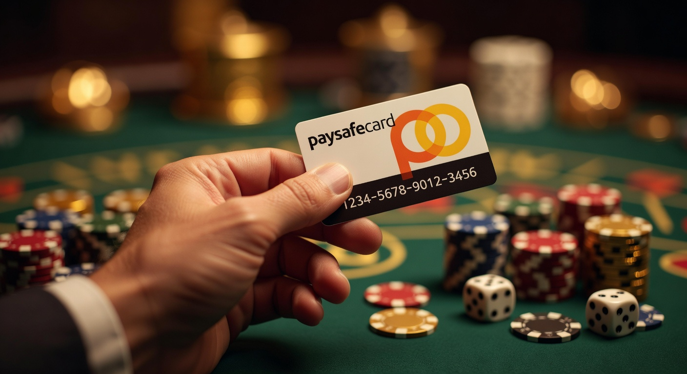
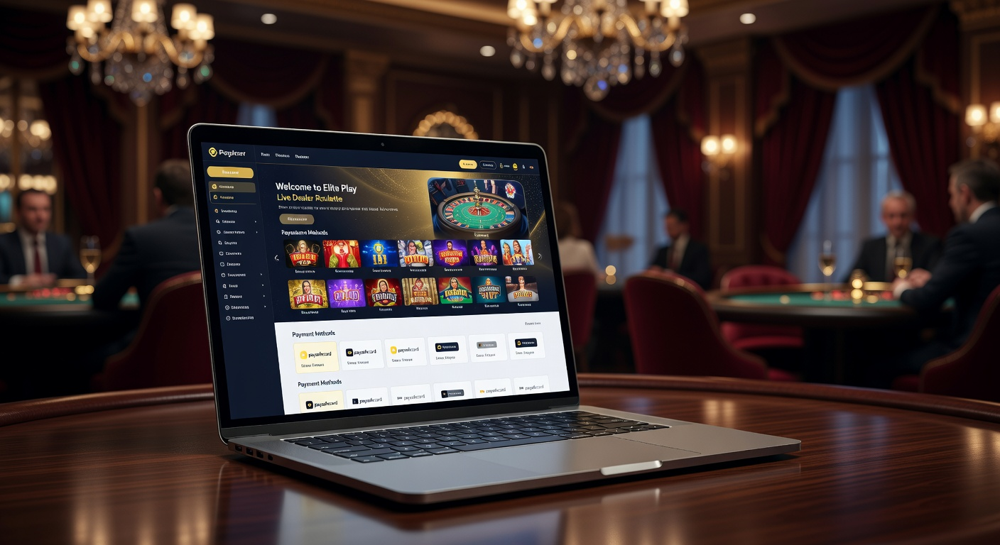
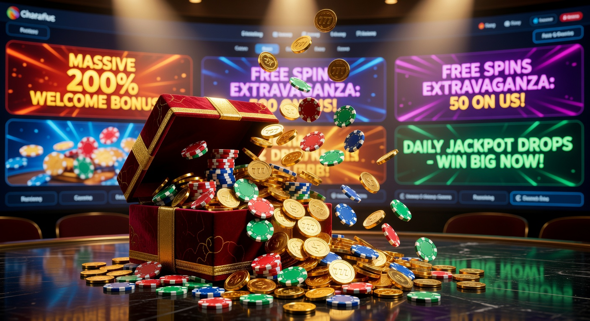
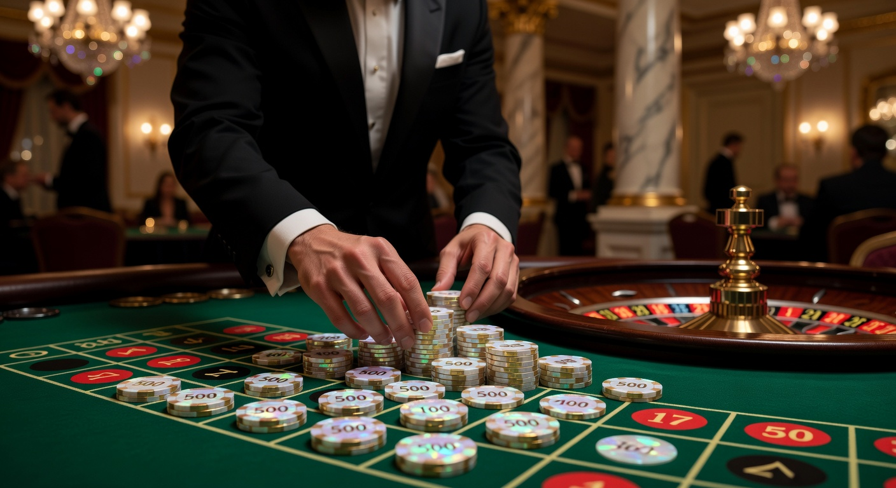
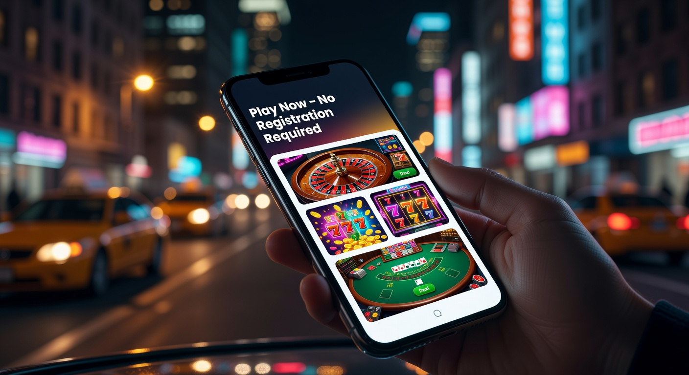

Paysafecard Casino Zonder Cruks: Veilig Gokken in 2026
In het huidige goklandschap van 2026 is de behoefte aan privacy en flexibiliteit groter dan ooit. Veel Nederlandse spelers zoeken naar alternatieve manieren om hun favoriete spellen te spelen zonder de strikte beperkingen van het nationale uitsluitingsregister. Een paysafecard casino zonder cruks biedt hier de perfecte uitkomst. Deze platformen combineren de anonimiteit van een prepaid betaalmethode met de vrijheid van een internationaal online casino.
Sinds de regulering van de Nederlandse markt is de invloed van de Kansspelautoriteit (Ksa) aanzienlijk toegenomen. Hoewel dit de veiligheid bevordert, ervaren veel gokkers de constante monitoring als een inbreuk op hun privacy. Een paysafecard casino zonder cruks stelt spelers in staat om te genieten van een breed scala aan gokkasten en live tafelspellen, terwijl ze zelf de controle over je eigen speelgedrag behouden zonder tussenkomst van een centraal overheidsregister.
Wanneer we kijken naar de populariteit van deze sites, valt op dat vooral de gebruiksvriendelijkheid en de snelheid van transacties doorslaggevend zijn. In dit artikel duiken we diep in de wereld van buitenlandse aanbieders, de voordelen van prepaid betalingen en hoe je de beste bonussen kunt claimen in nederland in 2026.
Wat maakt een paysafecard casino zonder cruks uniek?
Een paysafecard casino zonder cruks onderscheidt zich door de afwezigheid van een directe koppeling met het Centraal Register Uitsluiting Kansspelen. Dit betekent dat spelers die per ongeluk of tijdelijk in het register staan, nog steeds toegang hebben tot deze internationale platformen. Deze casino's opereren vaak onder licenties van gerenommeerde autoriteiten zoals de Malta Gaming Authority (MGA) of de Kahnawake Gaming Commission, waardoor de veiligheid gewaarborgd blijft.
Het gebruik van een casino met paysafecard zorgt ervoor dat je geen bankgegevens hoeft te delen met de goksite. Dit is een cruciaal voordeel voor spelers die waarde hechten aan anonimiteit. In een tijd waarin datalekken vaker voorkomen, biedt een fysiek of digitaal gekochte pincode van 16 cijfers een extra beveiligingslaag die traditionele bankoverschrijvingen of creditcards niet kunnen evenaren.
Daarnaast zijn deze casino's vaak moderner ingericht. Ze maken gebruik van de nieuwste technologieën om de speelervaring te optimaliseren. Omdat ze niet gebonden zijn aan de strikte Nederlandse reclameregels van 2026, kunnen ze vaak veel royalere bonussen en uitgebreidere loyaliteitsprogramma's aanbieden aan hun trouwe klanten.
Voordelen van storten met een prepaid kaart

Storten met een prepaid kaart zoals Paysafecard is een van de veiligste methoden om je saldo op te waarderen bij een online casino nederland. Het grootste voordeel is dat je nooit meer uitgeeft dan het bedrag dat op de kaart staat. Dit helpt spelers om hun budget effectief te beheren. Je hoeft geen persoonlijke financiële informatie op het internet achter te laten, wat het risico op fraude tot nul reduceert.
Bovendien is de verwerkingstijd van een storting direct. Zodra je de 16-cijferige code invoert, staat het geld op je spelersaccount. In een paysafecard casino zonder cruks kun je dus binnen enkele seconden beginnen met spelen op je favoriete slots van topontwikkelaars zoals NetEnt en Pragmatic Play.
- Anonimiteit: Geen casino-gerelateerde transacties op je bankafschriften.
- Budgetbeheer: Je kunt alleen storten wat je vooraf hebt gekocht.
- Snelheid: Directe stortingen zonder wachttijden.
- Veiligheid: Geen gevoelige data die gestolen kan worden.
Privacy en anonimiteit bij je transacties
In 2026 is digitale privacy een luxe goed geworden. Bij een regulier casino in Nederland worden alle transacties nauwlettend gevolgd. Bij een paysafecard casino zonder cruks blijft je financiële geschiedenis privé. De bank ziet alleen de aankoop van de Paysafecard-voucher (vaak bij een supermarkt, tankstation of online reseller), maar heeft geen inzicht in waar je dit geld vervolgens besteedt.
Dit is vooral belangrijk voor spelers die bijvoorbeeld een hypotheekaanvraag willen doen en niet willen dat gokuitgaven hun kredietwaardigheid beïnvloeden. Door te kiezen voor een casino zonder registratie of een platform dat prepaid kaarten accepteert, behoud je de volledige soevereiniteit over je eigen uitgavenpatroon.
Geen registratie in het uitsluitingsregister
Het CRUKS-systeem is bedoeld om spelers tegen zichzelf te beschermen, maar het kan ook restrictief werken voor degenen die hun speelgedrag prima onder controle hebben. Een paysafecard casino zonder cruks controleert je BSN-nummer niet. Dit betekent dat je niet wordt uitgesloten op basis van een centrale database. Je kunt zelf bepalen wanneer je speelt en wanneer je pauzeert, zonder dat een algoritme of overheidsinstantie die beslissing voor je neemt.
Het is echter essentieel om te onthouden dat veilig en verantwoord spelen je eigen verantwoordelijkheid blijft. De beste internationale casino's bieden nog steeds tools aan zoals stortingslimieten en zelfuitsluitingsopties op hun eigen platform, zodat je nog steeds beschermd bent, maar dan op je eigen voorwaarden.
Top aanbieders voor gokken met Paysafecard

Er zijn tegenwoordig talloze internationale aanbieders die de Nederlandse markt bedienen. Merken zoals Betninja hebben een sterke reputatie opgebouwd door hun snelle uitbetalingen en gigantische spelaanbod. In een paysafecard casino zonder cruks vind je vaak duizenden spellen die je in de Nederlandse staatscasino's niet zult tegenkomen.
| Casino Naam | Licentie | Min. Storting | Bonus |
|---|---|---|---|
| Betninja Elite | MGA | €10 | 100% tot €500 + 50 free spins |
| Global Play | Curacao | €5 | 200% Welkomstpakket |
| Prepaid Palace | Kahnawake | €10 | Cashback tot 15% |
Deze aanbieders richten zich op een wereldwijd publiek en bieden daarom vaak 24/7 klantenservice aan via live chat. Het is raadzaam om reviews te lezen op onafhankelijke sites zoals Wikipedia over online gokken om de betrouwbaarheid van een nieuw platform te verifiëren voordat je een grote storting doet.
De beste bonussen en promoties ontdekken

Een van de grootste trekpleisters van een paysafecard casino zonder cruks zijn de royale bonussen. Omdat deze casino's lagere operationele kosten hebben en minder belasting betalen in bepaalde rechtsgebieden, kunnen ze de speler meer teruggeven. Je kunt denken aan welkomstbonussen die je eerste storting verdubbelen of zelfs verdrievoudigen.
Daarnaast zijn free spins een standaard onderdeel van de promotiecampagnes. Vaak krijg je deze spins op populaire gokkasten van Play’n GO zoals 'Book of Dead'. Het is belangrijk om altijd de bonusvoorwaarden te lezen, met name de rondspeelvoorwaarden (wagering requirements), om te begrijpen hoe je de winst uit je bonus kunt laten uitbetalen.
In de moderne gokwereld kiezen veel spelers voor een online casino zonder registratie om sneller aan de slag te kunnen gaan met deze bonussen. Dit type casino zonder account maakt gebruik van systemen zoals Trustly om je identiteit te verifiëren via je bank, waardoor je direct kunt storten en spelen zonder lange formulieren in te vullen.
Beste Casino Zonder Registratie

De opkomst van het casino online zonder registratie heeft de markt in 2026 getransformeerd. Bij dit type paysafecard casino zonder cruks hoef je geen gebruikersnaam of wachtwoord aan te maken. Je logt simpelweg in met je bank-ID. Hoewel Paysafecard zelf vaak een account vereist voor grotere bedragen, werken veel van deze casinos zonder registratie samen met hybride betaaloplossingen.
Het grote voordeel van een online casino zonder account is de snelheid van de uitbetalingen. Waar je bij een traditioneel casino soms dagen moet wachten op je geld, staat de winst bij een online casino zonder registratie vaak binnen enkele minuten op je rekening. Dit komt omdat de verificatie al heeft plaatsgevonden tijdens het stortingsproces via iDIN of vergelijkbare technieken.
Online Gokken Zonder Registratie

Voor velen is online gokken zonder registratie de ultieme vorm van vrijheid. Het verwijdert de barrière van het uploaden van identiteitsbewijzen en energierekeningen, wat vaak een frustrerend proces is. In een paysafecard casino zonder cruks dat dit model volgt, staat de speler centraal. Je privacy wordt gerespecteerd en je kunt anoniem blijven zolang je binnen de limieten van de prepaid kaart blijft.
Dit concept is ook nauw verbonden met wedden zonder registratie. Sportliefhebbers kunnen snel een weddenschap plaatsen op hun favoriete voetbalteam of tennisspeler zonder eerst een heel dossier aan te leggen. Het gemak dient de mens, en in 2026 verwachten consumenten niets minder dan directe toegang tot hun entertainment.
Storten en uitbetalen: Hoe werkt het precies?
Het proces in een paysafecard casino zonder cruks is doodeenvoudig. Allereerst koop je een Paysafecard code. Dit kan bij duizenden fysieke verkooppunten in nederland in of via officiële online winkels. Vervolgens ga je naar de kassa van het online casino en kies je voor de optie Paysafecard.
Voer de 16-cijferige code in en het bedrag wordt onmiddellijk bijgeschreven. Wat betreft uitbetalingen: aangezien Paysafecard van oorsprong een eenrichtingsverkeer betaalmethode is, moet je voor uitbetalingen vaak een andere methode kiezen. Veel spelers kiezen in 2026 voor Bitcoin of een bankoverschrijving. Sommige casino's laten je echter ook uitbetalen naar je 'My Paysafecard' account, waarna je het saldo weer kunt gebruiken voor andere aankopen.
Hier zijn enkele populaire stortingslimieten die je tegenkomt:
- 5 euro deposit casino zonder cruks: Ideaal voor spelers met een klein budget die het casino willen uitproberen.
- 10 euro deposit casino zonder cruks: De meest voorkomende minimale storting die vaak ook recht geeft op een welkomstbonus.
- Online casino zonder cruks 10 euro: Veel platformen hanteren dit als standaard instapniveau.
Limieten en kosten bij buitenlandse casino's
Hoewel een een paysafecard casino vaak gratis transacties aanbiedt, is het belangrijk om te letten op mogelijke valutakosten. Veel buitenlandse casino's werken met euro's, maar als je op een site speelt die alleen dollars of Britse ponden accepteert, kan Paysafecard een kleine vergoeding rekenen voor de conversie. Voor meer informatie over consumentenrechten bij digitale betalingen kun je terecht op de website van de Consumentenbond.
De limieten per transactie met een Paysafecard zijn doorgaans lager dan bij een creditcard of Bitcoin betaling. Dit is echter juist wat veel spelers prettig vinden; het werkt als een natuurlijke barrière tegen te veel uitgeven. Voor high-rollers zijn er vaak VIP-opties waarbij hogere limieten mogelijk zijn na verificatie van het account.
Verantwoord spelen buiten het Nederlandse systeem
Hoewel een paysafecard casino zonder cruks niet is aangesloten bij de Nederlandse database, nemen gerenommeerde internationale sites verantwoord gokken zeer serieus. Zij moeten voldoen aan de eisen van hun eigen licentieverstrekker. Dit betekent dat zij protocollen hebben om gokverslaving te detecteren en spelers de mogelijkheid bieden om limieten in te stellen.
Het is cruciaal om voor jezelf regels op te stellen. Bepaal vooraf hoeveel je wilt verliezen en houd je daaraan. Maak gebruik van de tools die het online casino biedt, zoals een afkoelperiode of een tijdelijke blokkering van je account als je merkt dat het gokken geen plezier meer brengt. Voor hulp bij kansspelproblematiek kun je altijd contact opnemen met organisaties zoals AGOG.
✅ Voordelen van Casino’s Zonder Registratie
De voordelen van een casino met paysafecard zonder registratie zijn legio. Ten eerste is er de snelheid; je hoeft niet te wachten op handmatige goedkeuring van je documenten. Ten tweede is er de veiligheid; je deelt geen bankgegevens via iDEAL direct met de goksite als je dat niet wilt, hoewel iDEAL in 2026 nog steeds een populaire optie is voor velen.
Daarnaast is de spelervaring vaak superieur. Deze sites maken gebruik van de nieuwste API's van providers zoals NetEnt en Pragmatic Play, wat resulteert in snellere laadtijden en een vlekkeloze mobiele ervaring. Of je nu op je smartphone of tablet speelt, de interface past zich naadloos aan.
Licentie en regulering
Een betrouwbaar paysafecard casino zonder cruks beschikt altijd over een geldige licentie. De meest gerespecteerde licenties komen uit Malta (MGA). Een MGA-licentie staat garant voor eerlijke spellen, bescherming van spelersgelden en streng toezicht. Andere casino's opereren onder een licentie uit Curacao, wat hen meer vrijheid geeft in het accepteren van cryptovaluta zoals Bitcoin.
Controleer altijd onderaan de website van het casino of je het logo van de licentieverstrekker ziet en of dit linkt naar een officieel certificaat. Dit is de enige manier om er zeker van te zijn dat je speelt bij een legitieme partij die zich houdt aan internationale standaarden voor eerlijk spel.
Spelaanbod en providers
Het spelaanbod in een paysafecard casino zonder cruks is vaak indrukwekkend. Je vindt er duizenden gokkasten, van klassieke fruitautomaten tot moderne video slots met Megaways-mechanieken. De aanwezigheid van top-tier providers zoals Play’n GO, NetEnt en Pragmatic Play is een goed teken van kwaliteit.
Naast slots is het live casino segment enorm populair. Hier kun je in real-time spelen tegen echte dealers. Of het nu gaat om Roulette, Blackjack of spectaculaire spelshows zoals 'Crazy Time', de streamingkwaliteit in 2026 is van bioscoopniveau, waardoor het voelt alsof je in een echt casino aan de tafel zit.
Veelgestelde vragen over Paysafecard casino's
Hieronder beantwoorden we de meest voorkomende vragen over het spelen bij een paysafecard casino zonder cruks in 2026.
Is het legaal om bij een casino zonder CRUKS te spelen?
Als speler in Nederland is het niet strafbaar om bij een buitenlands casino te spelen. De Ksa richt zijn pijlen op de aanbieders, niet op de individuele gokkers. Zorg er wel voor dat je kiest voor een casino met een betrouwbare internationale licentie.
Kan ik met iDEAL betalen bij deze casino's?
Sommige internationale casino's bieden nog steeds iDEAL aan, vaak via een omweg of onder een andere naam. Echter, Paysafecard en Trustly zijn vaak snellere en meer privacy-vriendelijke alternatieven voor de Nederlandse markt.
Zijn mijn winsten belastingvrij?
In Nederland moet je officieel kansspelbelasting betalen over winsten bij casino's die geen Nederlandse licentie hebben, tenzij het casino gevestigd is binnen de EU (zoals Malta). Het is raadzaam om de actuele regels van de Belastingdienst in 2026 te raadplegen.
Hoe snel worden uitbetalingen verwerkt?
Bij een casino zonder account worden uitbetalingen vaak binnen 15 minuten verwerkt. Bij traditionele casino's kan dit 1 tot 3 werkdagen duren, afhankelijk van de gekozen methode.

Expert in online casino's en digitaal gokken met meer dan 8 jaar ervaring in de sector.